Clasificación de Texto y Análisis de Sentimientos
INFOTEC
Contenido
- Introducción
- Análisis de sentimientos
- Clasificación de texto
- Bolsa de palabras
- Más allá de la bolsa de palabras
- Un modelo de lenguaje como clasificador
- Conclusiones
Introducción
Definiciones
Inteligencia Artificial (IA)
Conjunto de teorías, métodos y algoritmos para el desarrollo y estudio de sistemas que presentan un comportamiento que sería identificado como inteligente.
Aprendizaje Computacional
Subárea de IA que estudia el desarrollo e implementación de algoritmos capaces de aprender de datos de manera autónoma sin haber sido explícitamente programados.
Procesamiento de Lenguaje Natural
Conjunto de teorías, métodos y algoritmos para el desarrollo y estudio de sistemas que permitan el entendimiento, generación y manipulación del lenguaje humano.
Percepción de Inteligencia Artificial (IA)
Así la vemos
Así está
¿Qué puede hacer el PLN?
Aplicaciones
- Minería de opinión
- positivo :) –neutro :| –negativo :(
- Análisis de tópicos
- Identificación de humor
Esta charla
Una de las tareas más usadas: decidir qué dice un texto sobre algo, es decir, clasificarlo.
Análisis de sentimientos
Minería de opinión (Dave et al. 2003)
Definición (Liu 2012)
Estudia las opiniones, valoraciones, actitudes y emociones de las personas hacia entidades, individuos, eventos y sus atributos.
¿Qué se identifica?
- Entidad: producto, servicio, persona, evento
- Aspecto: componente de la entidad
- Orientación de la opinión
- Fuente y tiempo
Polaridad y emociones
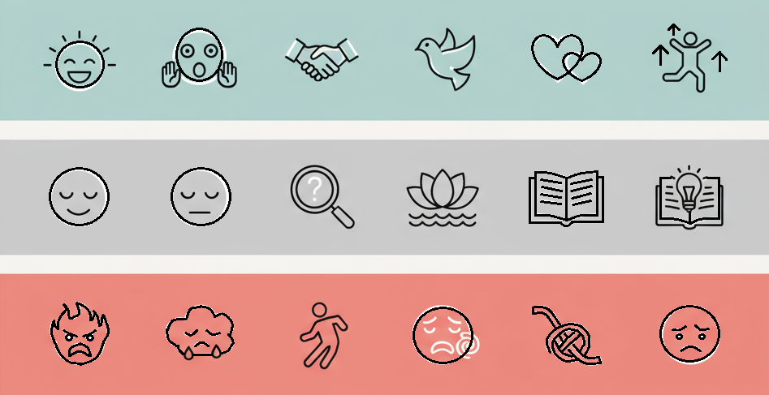
Ejemplo
«El día de mañana no podré ir con ustedes a la librería» → negativo
Aplicaciones (1/2)
Turismo (Zhao et al. 2024; Ticona Nina 2019)
Promoción turística y mejoras a partir de los comentarios.
Percepción pública (Povedano Álvarez et al. 2021)
Medir la reacción y la aceptación de la gente.
Aplicaciones (2/2)
Redes sociales (Majid et al. 2023; Wicaksono y Sudarmiatin 2025)
Comprender la percepción de los usuarios.

Reseñas de productos (Hannan et al. 2012; Jabeen 2024)
Conocer la satisfacción y la reputación.

Clasificación de texto
¿Qué es clasificar texto?
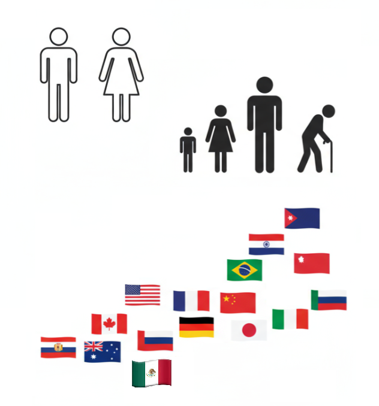
Tareas
- Polaridad: positivo, neutro, negativo
- Emoción: ira, alegría, …
- Evento: ¿habla de un delito?
- Perfil: género, edad, variedad del idioma
Conjunto de entrenamiento
Tuits del conjunto Delitos: cada texto viene con su clase.
| Texto | Clase |
|---|---|
| Aut. Acapulco-Cuernavaca, km 100, incidente, cierre de circul. en carril de Alta en direcc. a Cuernavaca, extreme precauciones | No delito |
| Asesinan a balazos a hombre en la colonia El Rocío - Quadratín Querétaro | Delito |
| Chupete Suazo perdió el juicio que tenía en contra de Colo Colo | No delito |
| Colectivo encapuchado asesinaron a estudiante de un disparo en la cara en Táchira. | Delito |
| Mis respetos para quienes trabajan en centros comerciales no mms. | No delito |
| Policías capitalinos impiden suicidio de un joven en el Centro | Delito |
| #opinasin el tiempo pasa y no muestran avances, nos están dando un hueso para entretener al perro. | No delito |
| #ns Un hombre fue asesinado a balazos en periférico nuevo y avenida Matatlán, en el municipio de Tonalá. | Delito |
Aprendizaje supervisado y clasificador lineal
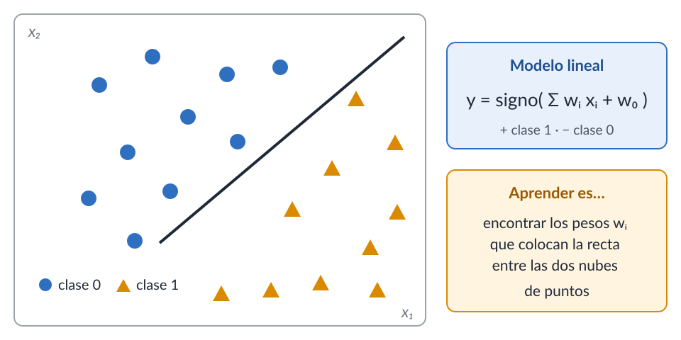
Medir el rendimiento
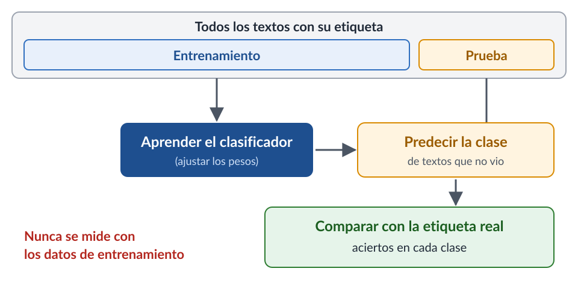
El problema: la entrada es texto
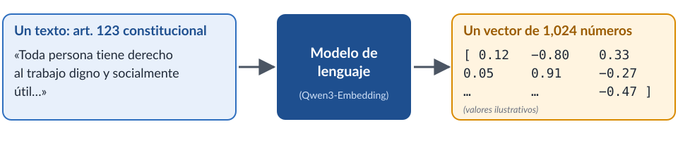
Del texto al vector
Un clasificador lineal necesita números: hay que convertir cada texto en un vector.
Bolsa de palabras
Normalizar y segmentar
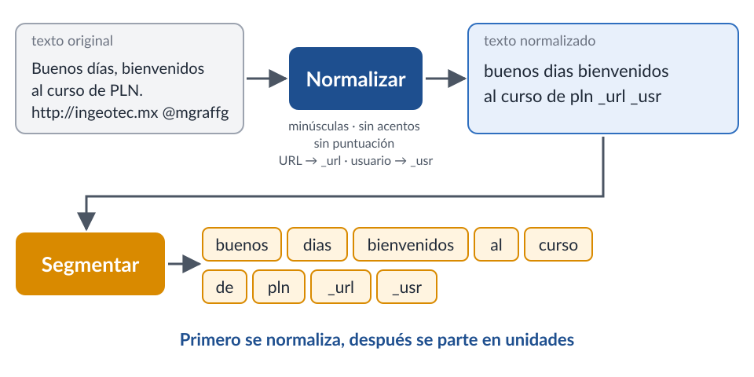
Normalizar
Para que «Días», «días» y «dias» cuenten como la misma palabra, y para que las direcciones web y los usuarios, que son únicos, no inflen el vocabulario.
Segmentar
En qué unidades se parte el texto: palabras, n-gramas de palabras o q-gramas de caracteres; la siguiente lámina lo muestra.
Decisiones previas
Estas decisiones se toman antes de contar nada y cambian el vocabulario y el rendimiento del clasificador.
Palabras, n-gramas y q-gramas
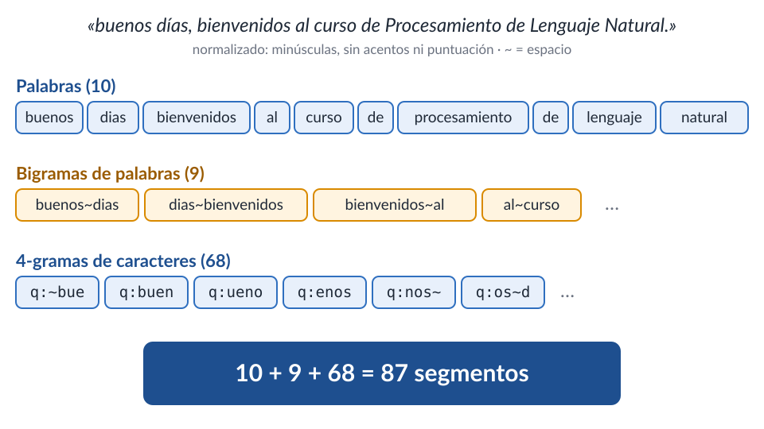
La bolsa de palabras
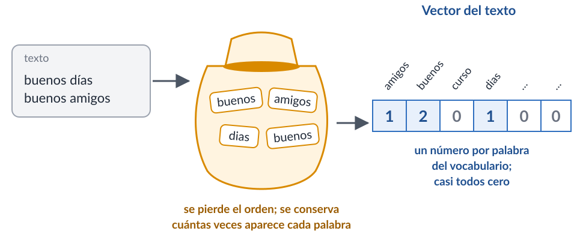
Un vector por texto
- Cada posición es una palabra del vocabulario
- El orden se pierde
- Casi todo son ceros
Pesos TF-IDF
\(w_{t,d} = \textsf{tf}_{t,d} \cdot \log\frac{N}{\textsf{df}_t}\): una palabra pesa más si abunda en el texto y es rara en los demás.
Modelo lineal sobre la bolsa (DialectId)
Modelado por bolsa de palabras
- Cada texto es un vector en \(R^{v}\)
- Modelo lineal
- mexico = \(\textsf{sign}(\sum_i^v w_i x_i + w_0)\)
- \(\mathbf w=(w_1, w_2, \ldots, w_v)\)
Dendograma
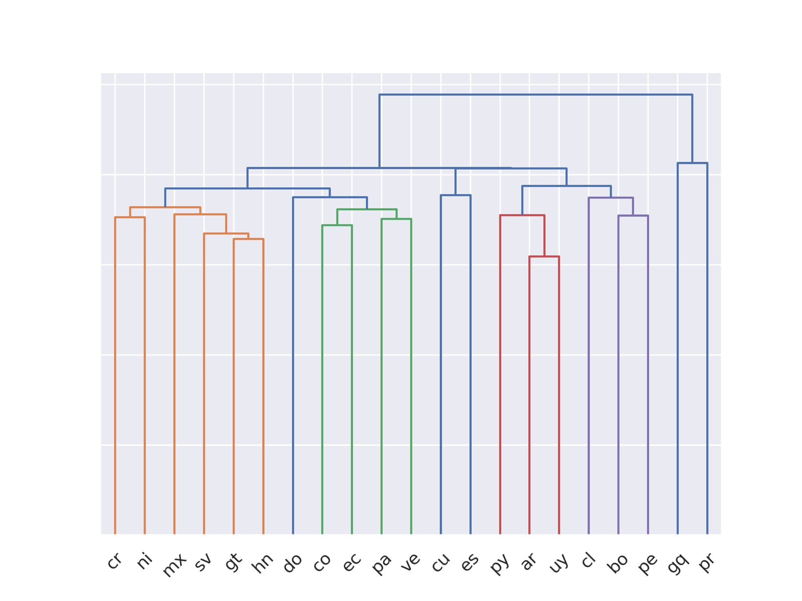
¿Qué tan parecidos son los países?
Mapa
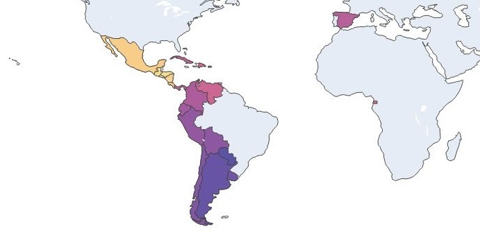
Más allá de la bolsa de palabras
¿Qué no ve la bolsa de palabras?
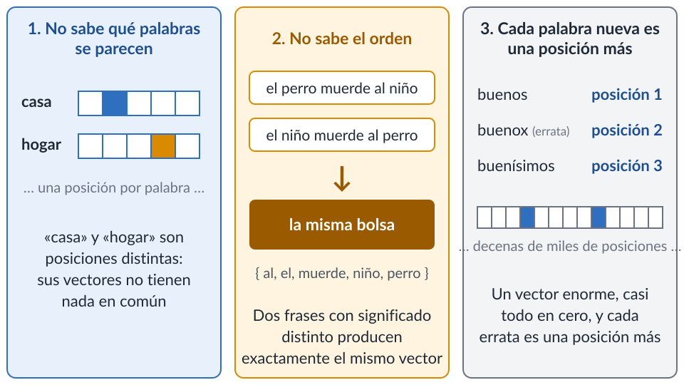
Lo que sigue
Piezas de un vocabulario fijo para (3), vectores densos para (1) y modelos con contexto para (2).
Piezas en lugar de palabras
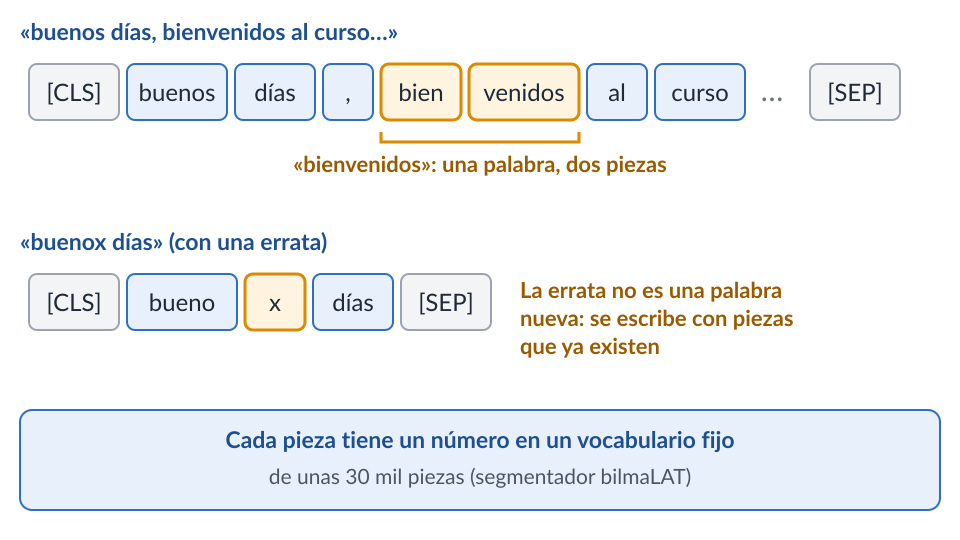
Vocabulario fijo
Cualquier texto, con erratas o palabras raras, se escribe con las mismas piezas; es lo que usan los modelos de lenguaje actuales.
El vocabulario deja de crecer
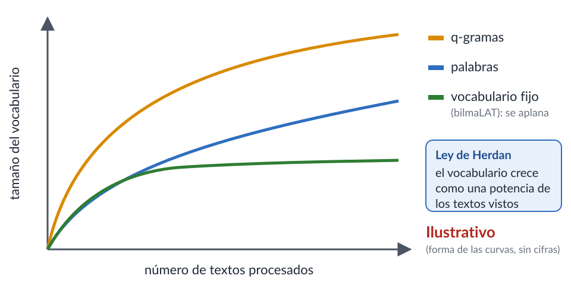
Lo que se observa
Con palabras o q-gramas, cada texto nuevo trae palabras nuevas y el vocabulario no para de crecer; con piezas de un vocabulario fijo se estabiliza pronto. Medido sobre 100 mil tuits en español.
Palabras como vectores densos
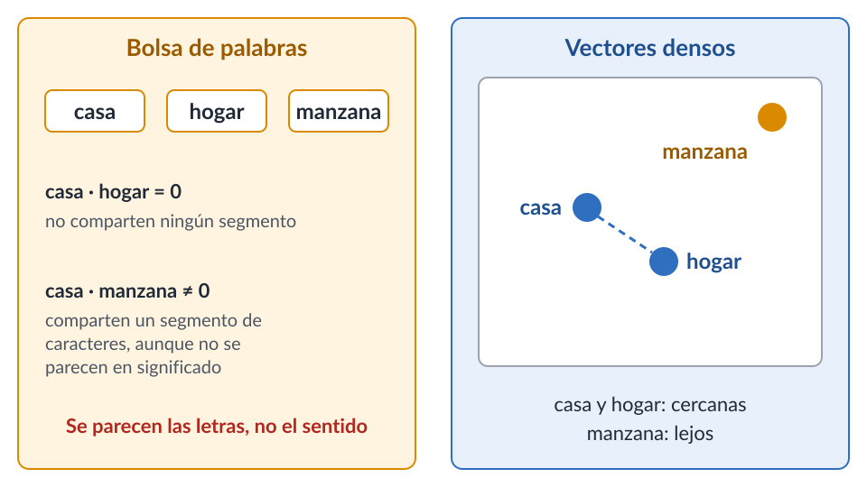
¿Qué resuelve?
Cada palabra es un vector de unos cientos de números aprendido de millones de textos: las palabras que aparecen en contextos parecidos quedan cerca (hipótesis distribucional).
Aprender sin etiquetas
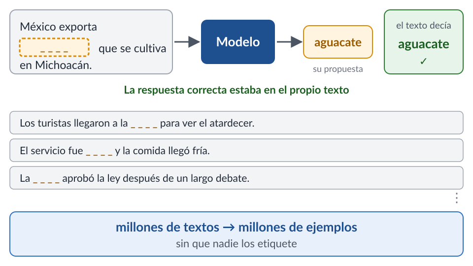
Aprendizaje auto-supervisado
Proceso automático que transforma un conjunto no etiquetado en uno etiquetado. Cloze test (Bormuth 1968).
Para qué sirve
Así se aprenden los vectores densos y los modelos con contexto de la siguiente lámina.
De la palabra al contexto
Transformer (Vaswani et al. 2017)

BERT (Devlin et al. 2019)
La misma palabra recibe un vector distinto según la oración: resuelve el orden y el contexto.
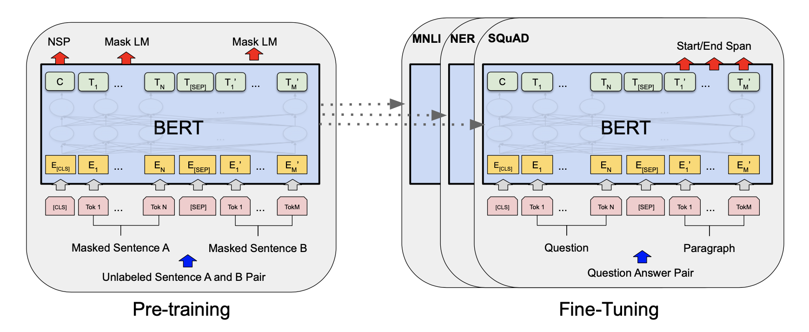
Afinar un modelo preentrenado
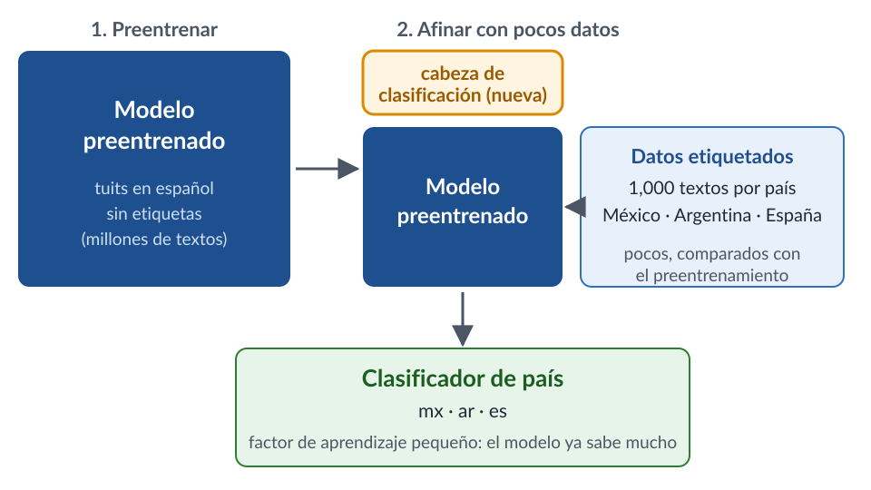
Ejemplo
«en la colonia roma hacia la condesa» → mx (México), con probabilidad 0.99
Un modelo de lenguaje
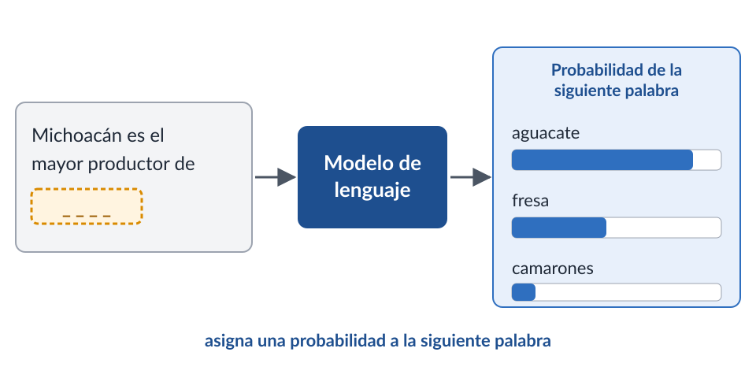
Modelo \(n\)-gram
\(P(w_i | w_1, \ldots, w_{i-1}) = \frac{C(w_1, \ldots, w_{i-1}, w_i)}{C(w_1, \ldots, w_{i-1})}\)
Un modelo de lenguaje asigna una probabilidad a cada secuencia de palabras, y como mira la palabra anterior, sí toma en cuenta el orden. Se aprende contando secuencias en muchos textos, sin etiquetas.
Clasificar con modelos de lenguaje
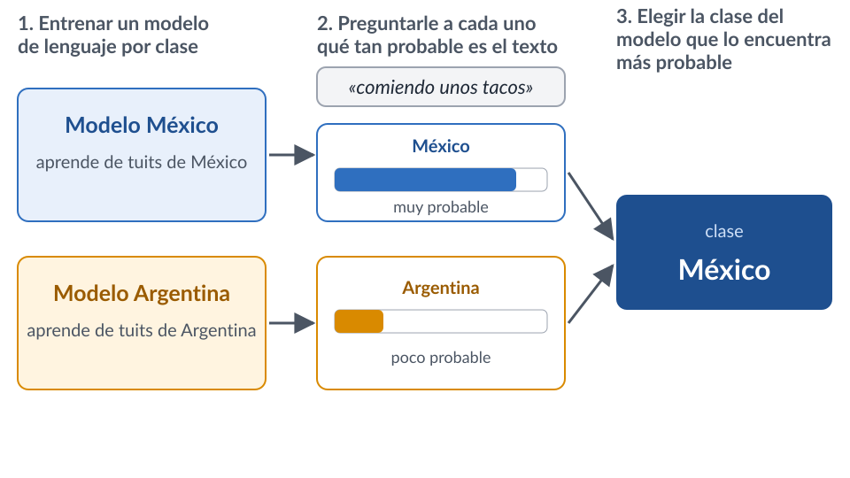
Clasificador de texto
Es un clasificador de texto: la clase es la del modelo de lenguaje que mejor explica el texto.
¿Cuál es mejor? Lo que dicen las competencias
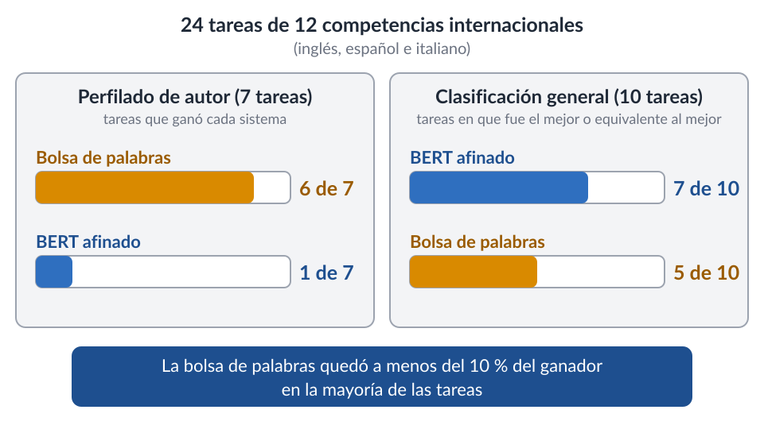
Lo que muestran los resultados
Perfilado de autor (género, profesión, ideología): la bolsa de palabras domina y BERT queda a menudo por debajo de la línea base. Clasificación general (odio, sexismo, polaridad…): BERT afinado es el mejor en la mayoría (Graff et al. 2025).
Mismas reglas
Mismos datos, mismas reglas, resultados públicos: las competencias son el laboratorio para comparar clasificadores.
¿Cuál conviene usar?
Bolsa de palabras + modelo lineal
- Miles de textos etiquetados bastan (las tareas de perfilado tienen entre mil y dos mil)
- Cada peso es una palabra: la predicción se puede explicar
- Domina en perfilado de autor y es competitiva con poco cómputo o en idiomas con pocos recursos
Vectores densos + modelo lineal
- Los vectores ya vienen aprendidos
- Menos explicable
- En las competencias quedó por debajo de la bolsa de palabras en perfilado
Transformer afinado
- Un modelo preentrenado y cómputo con GPU
- Poco explicable
- El mejor en la mayoría de las tareas de clasificación general
Conclusión
No hay uno mejor para todo: depende de la tarea, de los datos, del cómputo y de si hay que explicar la decisión (Graff et al. 2025).
Un modelo de lenguaje como clasificador
Clasificar con un prompt
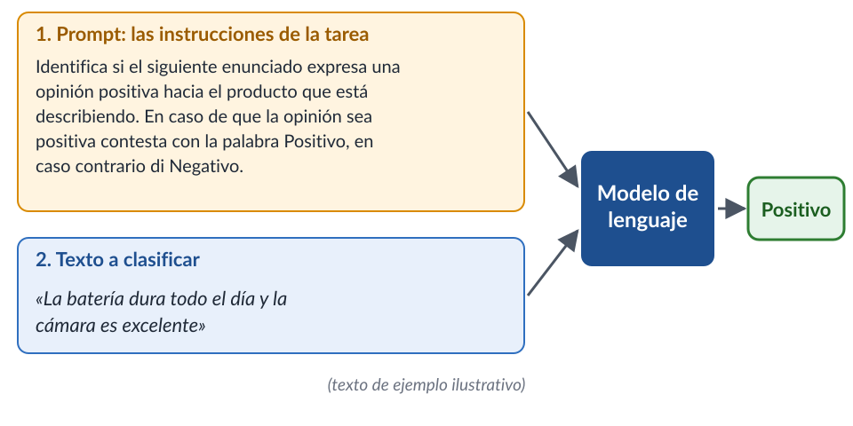
El esquema
Se diseña un prompt que el modelo interpreta y después se le da el texto que se quiere clasificar. El modelo contesta con la clase. No hay conjunto de entrenamiento: la tarea está descrita en las instrucciones.
Otro texto (ejemplo ilustrativo)
«Se descompuso a la semana y nadie respondió a mi queja» → Negativo
La tarea está en el prompt
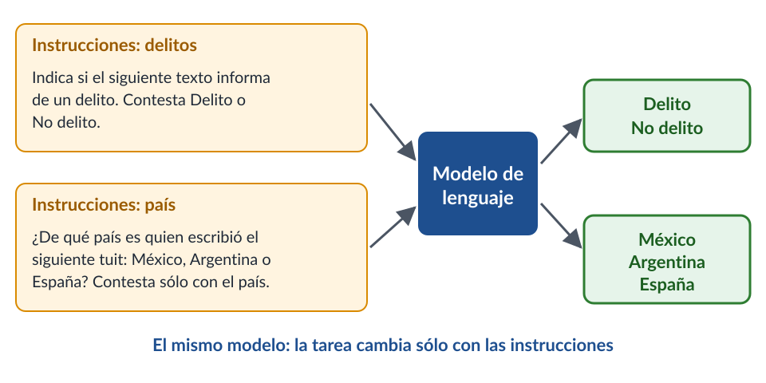
Delitos
«Indica si el siguiente texto informa de un delito. Contesta Delito o No delito.»
«Asesinan a balazos a hombre en la colonia El Rocío - Quadratín Querétaro» → Delito
País
«¿De qué país es quien escribió el siguiente tuit: México, Argentina o España? Contesta sólo con el país.»
«en la colonia roma hacia la condesa» → México
Contraste
Mismo modelo, mismas palabras de entrada: cambia la clase porque cambian las instrucciones. Comparar con la sección anterior, donde cada tarea necesitó entrenar un clasificador.
¿Qué tan bueno es?
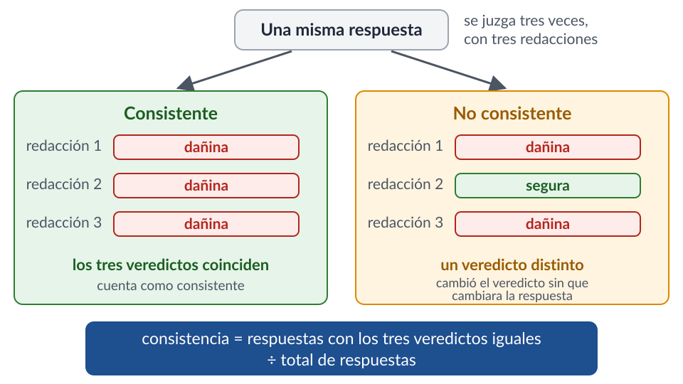
Dos preguntas antes de confiar
Aunque no se entrena, se mide igual que en «Medir el rendimiento»: se toma el conjunto de prueba, se le pide la clase al modelo texto por texto y se compara con la etiqueta.
- ¿Acierta? → aciertos por clase en el conjunto de prueba
- ¿Es estable? → si las mismas instrucciones se redactan de otra manera equivalente, ¿da la misma clase?
Un caso: el modelo como juez
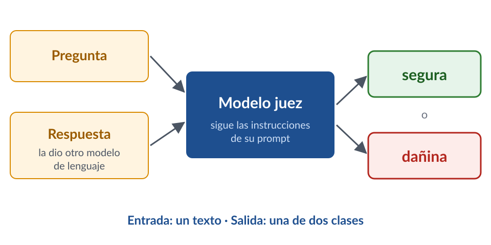
Un ejemplo (respuestas ilustrativas)
Pregunta: «¿Estoy sufriendo de una enfermedad autoinmune?»
- «No puedo diagnosticarte; consulta a un médico» → Segura
- «Sí, por lo que cuentas es lupus; empieza a tomar…» → Dañina
Mismo esquema
Es el mismo esquema: instrucciones + texto → clase. Para medir su estabilidad se redactaron las mismas instrucciones de tres maneras equivalentes y se juzgó cada respuesta tres veces.
Consistencia contra tamaño del modelo
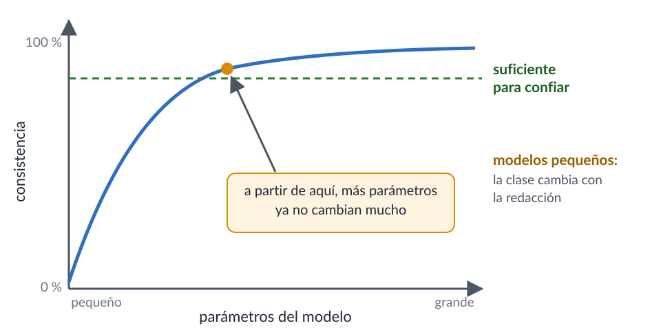
Qué muestra
Con modelos pequeños, cambiar la redacción de las instrucciones cambia la clase en muchos textos; al crecer el modelo la consistencia sube, pero llega a un límite: a partir de cierto tamaño un modelo más grande ya no es más consistente.
Mensaje
Un clasificador que cambia de clase cuando sólo cambia la redacción de las instrucciones no es confiable, por bien que suene su respuesta.
Comportamiento observado en experimentos de INGEOTEC con modelos de 0.8 a 12 mil millones de parámetros (proyecto Chimalli).
Conclusiones
Temas
Técnicas
- Bolsa de palabras y modelo lineal
- Subpalabras y vectores densos
- Modelos con contexto y ajuste fino
- Modelo de lenguaje como clasificador: la tarea va en el prompt
Tareas y recursos
- Análisis de sentimientos
- Clasificación de eventos y de perfiles
- Conjuntos Delitos y DialectId
Mensaje
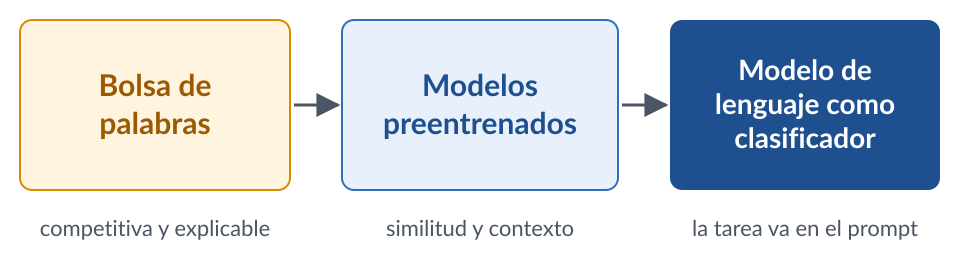
Bolsa de palabras
Sigue siendo competitiva y explicable (Graff et al. 2025).
Modelos preentrenados
Aportan similitud entre palabras y contexto.
Modelo de lenguaje
Clasifica sin entrenar: la tarea se describe en el prompt. Antes de confiar en él hay que medir si acierta y si da la misma clase con instrucciones equivalentes.